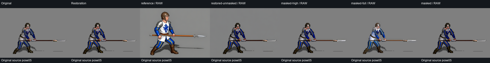
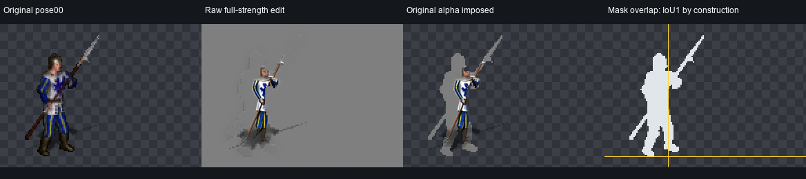
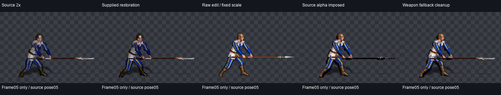

Research candidates only. Production assets remain unchanged. Source-alpha derivatives impose silhouette; they do not prove raw model adherence. Original per-frame timing remains unresolved.
Shared playback: 10 x 100ms, a comparison assumption. Repeats: [0,1,2,3,4,5,4,3,2,1]. See all frames, silhouettes, report and the raw PNGs/workflows in each trial folder.
Seventeen local Qwen outputs. Both complete sequences above are unaccepted research trials. The full-strength group has incomplete figure parts in early poses; source alpha cannot repair them. See executed results and recommendation.
Ready pose: canvas-size comparison · Thrust: strength and mask comparison · All-frame source landmarks · Final actual Gym comparison · Synchronized engine preview


One executed frame only. Source-alpha and weapon-fallback derivatives are partial repairs, with internal pose mismatch remaining.

Source landmark overlay · Timed intervention record · Actual Gym render comparison